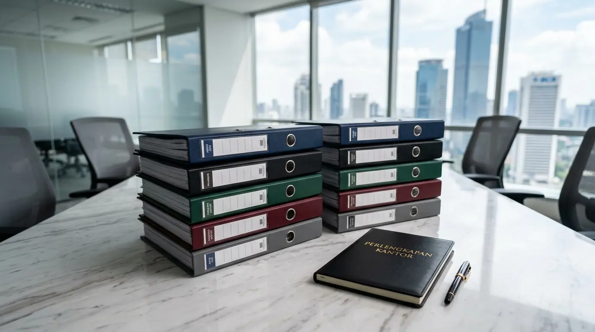

Apa Saja Merk Ordner Terbaik Kearsipan Kantor yang Kuat dan Tahan Lama?
Merk ordner terbaik kearsipan kantor yang kuat dan tahan lama meliputi Bambi, Bantex, Bindex, GPR, serta BMB yang dirancang dengan papan karton pres dingin ekstra tebal dan lapisan plastik PVC tahan kelembapan. Berdasarkan data Indonesia Archival Brand Survey 2025-2026, sebanyak 87% divisi kearsipan di kawasan bisnis perkantoran mengandalkan produk berpelapis PVC untuk mengamankan dokumen laporan keuangan dan berkas hukum penting. Laporan Commercial Office Supply Report 2025 juga mencatat bahwa penggunaan binder berkualitas tinggi menekan angka kerusakan fisik arsip kertas hingga 41% dalam kurun waktu penyimpanan jangka panjang.
Pemilihan brand binder yang tepat sangat menentukan kelancaran sistem tata kelola administrasi perusahaan. Folder berkualitas tinggi tidak hanya bertindak sebagai tempat penyimpanan, melainkan juga sebagai benteng perlindungan utama dari ancaman jamur, debu, dan lipatan. Oleh karena itu, bermitra dengan penyedia Perlengkapan Kantor yang menyalurkan produk original adalah langkah krusial dalam mengamankan dokumen vital perusahaan Anda.
Berikut adalah tabel perbandingan spesifikasi dari jajaran merk ordner kearsipan utama:
| Merk Ordner Kearsipan | Material Pelapis Utama | Fitur Unggulan Konstruksi | Rekomendasi Penggunaan |
|---|---|---|---|
| Bambi | PVC Plastik Premium | Double Strong Mechanism & Finger Ring | Arsip Keuangan & Audit Utama |
| Bantex | Environmentally Friendly PP | Rangka Karton Solid & Label Replaceable | Kearsipan Administrasi Umum |
| Bindex | Laminated Paper / PVC | Strong Arch Mechanism & Corner Guard | Dokumen Operasional Harian |
| GPR / BMB | PVC Standard / Paper | Mekanis Tuas Baja & Opsi Warna Luas | Pengarsipan Berkas Skala Besar |
- Untuk arsip vital jangka panjang: pilih Bambi atau Bantex dengan PVC premium.
- Untuk operasional harian yang sering diakses: Bindex dengan corner guard sangat tahan gesekan.
- Untuk kebutuhan volume besar dengan anggaran terbatas: GPR/BMB menawarkan opsi warna luas.
Mengapa Kualitas Tuas Mekanis dan Papan Karton Sangat Menentukan Efisiensi Kearsipan?
Kualitas tuas mekanis dan papan karton sangat menentukan efisiensi kearsipan karena tuas besi berbahan baja presisi menjepit ratusan lembar dokumen secara konsisten tanpa mudah macet, sementara papan karton tebal menjaga folder tetap berdiri tegak di rak tanpa melengkung. Di lingkungan kantor yang padat transaksi, aktivitas pembukaan dan penutupan folder terjadi secara berulang-ulang setiap hari.
Penataan folder yang menggunakan produk berkualitas rendah sering kali menghadapi masalah mekanis tuas yang longgar atau patah. Hal ini dapat mengakibatkan kertas tercecer dan rusak. Dengan memilih produk dari penyedia Perlengkapan Kantor, Anda memperoleh jaminan kekuatan engsel logam yang teruji untuk beban dokumen berkapasitas penuh.
- Tuas baja presisi mampu menahan tekanan jepitan hingga 500 lembar kertas tanpa melonggar.
- Papan karton berkualitas tinggi mencegah folder melengkung meski disimpan bertahun-tahun.
Faktor Apa Saja yang Wajib Dipertimbangkan Saat Memilih Ordner Kearsipan Perusahaan?
Faktor yang wajib dipertimbangkan saat memilih ordner kearsipan perusahaan meliputi ukuran kertas yang digunakan (F4 atau A4), lebar punggung binder (5 cm atau 7 cm), ketersediaan kantong label transparan untuk pengkodean, serta keberadaan pelindung sudut logam (corner protector).
Kriteria utama dalam menentukan pilihan binder kearsipan mencakup:
- Kesesuaian Ukuran Kertas: Memilih ukuran F4 untuk memberikan perlindungan menyeluruh pada tepi kertas agar tidak terlipat.
- Kapasitas Lebar Punggung: Menggunakan ukuran 7 cm untuk daya tampung hingga 500 lembar atau 5 cm untuk penataan berkas yang lebih ringkas.
- Ketahanan Terhadap Kelembapan: Mengutamakan pelapis plastik PVC kedap air untuk mencegah pertumbuhan jamur kertas.
- Kemudahan Sistem Identifikasi: Memastikan bagian punggung memiliki mika label yang mudah diganti sesuai siklus tahunan arsip.
- ✅ Ukuran F4 untuk perlindungan maksimal.
- ✅ Lebar punggung 7 cm untuk kapasitas besar.
- ✅ Lapisan PVC tahan air dan jamur.
- ✅ Kantong label transparan di punggung.
- ✅ Corner protector logam bawah.
Bagaimana Cara Menata Sistem Kearsipan Berbasis Warna Menggunakan Ordner?

Distributor Perlengkapan Kantor menyediakan pasokan ordner dengan berbagai pilihan warna untuk sistem kode warna arsip.
Cara menata sistem kearsipan berbasis warna menggunakan ordner adalah dengan menetapkan warna sampul folder yang berbeda untuk setiap divisi atau kategori tahun akuntansi, lalu menyusunnya secara teratur di rak arsip. Sistem penandaan warna (color-coding) ini memangkas waktu pencarian dokumen oleh staf administrasi hingga puluhan persen.
Misalnya, warna biru digunakan khusus untuk dokumen perpajakan, warna merah untuk berkas personalia, dan warna hijau untuk kontrak kerja sama B2B. Untuk menerapkan sistem ini secara utuh, pesan pasokan lengkap berbagai warna melalui distributor Perlengkapan Kantor milik kami.
Sempurnakan tata kelola dokumen dan amankan berkas vital perusahaan Anda sekarang juga dengan memesan produk dari penyedia Perlengkapan Kantor tepercaya yang menghadirkan penawaran harga grosir bersaing.
Apa Saja Kesalahan Fatal dalam Pengadaan Folder Kearsipan Kantor?
Kesalahan fatal dalam pengadaan folder kearsipan kantor meliputi tergiur harga murah tanpa memperhitungkan ketebalan karton, memilih folder tanpa lapisan tahan air di area berkelembapan tinggi, serta membeli produk tiruan dengan engsel besi yang ringkih. Penggunaan binder berkualitas rendah justru akan membengkakkan biaya operasional karena Anda harus mengganti folder rusak dalam waktu singkat.
Selain itu, mengabaikan pentingnya keseragaman merk dan ukuran dapat membuat penataan di rak penyimpanan terlihat berantakan. Mengikat kerja sama pasokan bersama distributor Perlengkapan Kantor membantu menjaga konsistensi standar kerapian ruang arsip kantor Anda.
- ❌ Membeli ordner dengan karton tipis yang mudah melengkung.
- ❌ Mengabaikan lapisan tahan air, terutama di ruang lembap.
- ❌ Membeli produk tiruan dengan engsel besi yang ringkih.
- ❌ Tidak memeriksa keseragaman ukuran dan merk untuk tampilan rapi.
Pertanyaan Populer Seputar Merk Ordner Terbaik Kearsipan
Kesimpulan Praktis
Memilih merk ordner terbaik kearsipan kantor merupakan investasi jangka panjang yang krusial untuk menjaga integritas, kebersihan, dan kerapian dokumen bisnis perusahaan. Didukung oleh ketersediaan produk original dan layanan pengiriman cepat dari Perlengkapan Kantor, seluruh kebutuhan kearsipan operasional Anda dapat terpenuhi dengan sempurna.

Penulis: Ardhana Prasasta
Spesialis konten & konsultan furnitur tata ruang kantor di Perlengkapan Kantor. Berpengalaman dalam memberikan panduan solusi ergonomis, efisiensi ruang kerja, dan pengadaan perlengkapan kantor korporat.